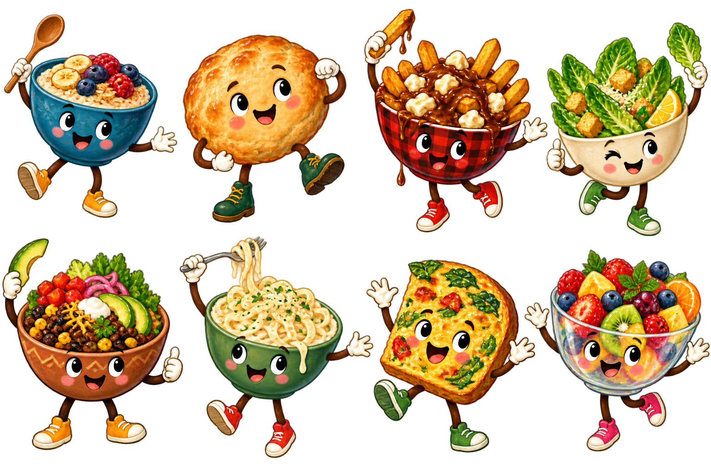
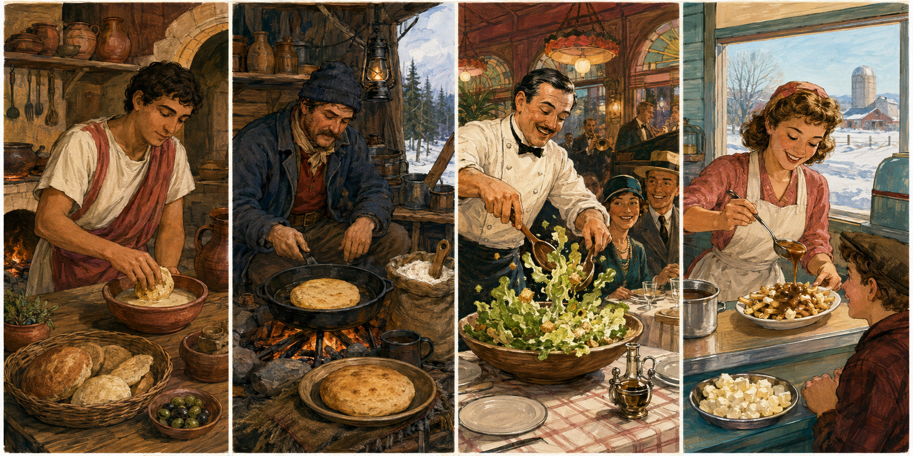

Today's mini lesson
2–5 min
St. James-Assiniboia school program
Every meal
has a story.
Explore how food connects land, people, agriculture, history, migration, culture, family and community — all the way to today's plate.
45menu listings
16food stories
13ingredient journeys
Land
People
Culture
From land
to lunch
New for curious kids
Meet the Lunch Bunch!
These illustrated food friends pop up in comics, quizzes and story missions. They represent food ideas — not Shelly's exact recipes or portions.

Start with today's lunch
Featured food stories
The food-story lens
Lunch is the last stop in a much bigger journey.
Each story begins with ingredients and moves through places, people and kitchens. Students learn to see the whole system, not just a country label.
01LandWhere ingredients begin
02PeopleWho grows and prepares food
03CultureHow recipes carry stories
04PlateWhat students eat today
Made for real classrooms
Turn lunch into a two-minute lesson.
Choose a meal and reading level. Get one question for before eating, one sensory prompt for while eating and one food-system question for after.
Explore the menu
Food story library
Sixteen careful stories cover every one of Shelly's 45 menu listings.
Reading level
🌱
No stories found
Try another dish, ingredient or filter.
Source-of-truth inventory
All 45 menu listings
Food-literacy content does not replace Shelly's approved allergen information. Check the current menu for wheat/gluten, milk/dairy, egg, fish, soy and chicken designations.
| # | Menu item | Menu category | Food story |
|---|
The food time machine
Real stories.
Big adventures.
Jump into six moments from food history. Every chapter is based on published research — and every uncertain origin stays uncertain.
6 true-story chaptersKid-friendlySource checked
Four stops through time
Can you spot what changed?
Illustrated scenes · captions below

🎨 Artwork is an educational illustration, not archival evidence or a photograph of Shelly's food.
Choose a time portal
Open a story chapter
My story stamps0 / 6
Story detective rule
A great food historian says “we don't know” when the evidence is incomplete.
Some origin stories have strong records. Others have several competing memories. Spot the debated badge and look for clues instead of forcing one answer.
Ingredient origins
Where did my lunch begin?
Choose an ingredient and follow it from land, farm or water to the school table.
One ingredient, many cultures
The same ingredient can tell many food stories.
One wheat field
Many foods
Bannock→Toast→Pancakes→Pasta→Burger bun
Key lesson: ingredient origin is not the same as dish origin.
World food map
Recipes move. Stories connect.
Select a marker to open its food story.
Connections show origin, migration and adaptation — not ownership by one place.
A two-minute classroom activity
Teacher toolkit
Choose a food story and reading level. The dashboard builds a simple before, during and after prompt set.
Use with any meal
Discussion card deck
1 / 7
Inclusive facilitation
Invite curiosity, not comparison.
Ask what students notice and wonder. Avoid asking children to disclose personal cultural, immigration or socioeconomic information. A food can be familiar, new or a little familiar — never “weird.”
Practical rollout
The recommended school package
One research system, reused across the touchpoints schools will actually use.
Reusable content system
25 deliverables, one source of truth
Concept coverage25 / 25
Cultural review built in
Accuracy before simplicity.
Stories are labelled by evidence and uncertainty. Shelly's version stays separate from historical or traditional versions.
✓
No false country labelsMultiple influences stay visible.
✓
Living Indigenous foodwaysNo generic or decorative claims.
✓
Uncertainty is namedDebated origins stay debated.
✓
Recipe distinctionTraditional ≠ contemporary ≠ Shelly's.